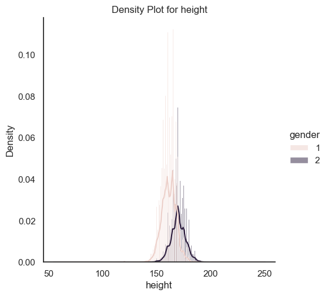

import pandas as pd
import seaborn as sns
import matplotlib.pyplot as plt
import numpy as npcardio = pd.read_csv('../Data/01-modified-data/cardio.csv')
cardio['bmi'] = round(cardio['weight'] / ((cardio['height']/100) ** 2),2)
cardio.head()| id | age | gender | height | weight | ap_hi | ap_lo | cholesterol | gluc | smoke | alco | active | cardio | bmi | |
|---|---|---|---|---|---|---|---|---|---|---|---|---|---|---|
| 0 | 0 | 50 | 2 | 168 | 62 | 110 | 80 | 1 | 1 | 0 | 0 | 1 | 0 | 21.97 |
| 1 | 1 | 55 | 1 | 156 | 85 | 140 | 90 | 3 | 1 | 0 | 0 | 1 | 1 | 34.93 |
| 2 | 2 | 52 | 1 | 165 | 64 | 130 | 70 | 3 | 1 | 0 | 0 | 0 | 1 | 23.51 |
| 3 | 3 | 48 | 2 | 169 | 82 | 150 | 100 | 1 | 1 | 0 | 0 | 1 | 1 | 28.71 |
| 4 | 4 | 48 | 1 | 156 | 56 | 100 | 60 | 1 | 1 | 0 | 0 | 0 | 0 | 23.01 |
# Select numerical columns
numerical_cols = ["age", "height", "weight", "ap_hi", "ap_lo", "bmi"]
stats = {
'Mean': cardio[numerical_cols].mean(),
'Median': cardio[numerical_cols].median(),
'Mode': cardio[numerical_cols].mode().iloc[0],
'Standard Deviation': cardio[numerical_cols].std(),
'Variance': cardio[numerical_cols].var()
}
stats_df = pd.DataFrame(stats)
print(stats_df) Mean Median Mode Standard Deviation Variance
age 53.338686 54.000 56.00 6.765294 45.769203
height 164.359229 165.000 165.00 8.210126 67.406175
weight 74.205543 72.000 65.00 14.395829 207.239884
ap_hi 128.817286 120.000 120.00 154.011419 23719.517323
ap_lo 96.630414 80.000 80.00 188.472530 35521.894676
bmi 27.556502 26.375 23.88 6.091795 37.109965for stat_name, values in stats.items():
plt.figure(figsize=(10, 6))
sns.barplot(x=values.index, y=values.values, palette="viridis")
plt.title(stat_name)
plt.ylabel(stat_name)
plt.show()/var/folders/v5/fcyrhn_x2qx_md06v54z9x200000gn/T/ipykernel_8894/4009188356.py:3: FutureWarning:
Passing `palette` without assigning `hue` is deprecated and will be removed in v0.14.0. Assign the `x` variable to `hue` and set `legend=False` for the same effect.
sns.barplot(x=values.index, y=values.values, palette="viridis")
/var/folders/v5/fcyrhn_x2qx_md06v54z9x200000gn/T/ipykernel_8894/4009188356.py:3: FutureWarning:
Passing `palette` without assigning `hue` is deprecated and will be removed in v0.14.0. Assign the `x` variable to `hue` and set `legend=False` for the same effect.
sns.barplot(x=values.index, y=values.values, palette="viridis")
/var/folders/v5/fcyrhn_x2qx_md06v54z9x200000gn/T/ipykernel_8894/4009188356.py:3: FutureWarning:
Passing `palette` without assigning `hue` is deprecated and will be removed in v0.14.0. Assign the `x` variable to `hue` and set `legend=False` for the same effect.
sns.barplot(x=values.index, y=values.values, palette="viridis")
/var/folders/v5/fcyrhn_x2qx_md06v54z9x200000gn/T/ipykernel_8894/4009188356.py:3: FutureWarning:
Passing `palette` without assigning `hue` is deprecated and will be removed in v0.14.0. Assign the `x` variable to `hue` and set `legend=False` for the same effect.
sns.barplot(x=values.index, y=values.values, palette="viridis")
/var/folders/v5/fcyrhn_x2qx_md06v54z9x200000gn/T/ipykernel_8894/4009188356.py:3: FutureWarning:
Passing `palette` without assigning `hue` is deprecated and will be removed in v0.14.0. Assign the `x` variable to `hue` and set `legend=False` for the same effect.
sns.barplot(x=values.index, y=values.values, palette="viridis")

categorical_vars = ["gender", "cholesterol", "gluc", "smoke", "alco", "active", "cardio"]
for var in categorical_vars:
print(f"Frequency distribution for {var}:\n")
print(cardio[var].value_counts())
print("\n" + "="*50 + "\n")Frequency distribution for gender:
gender
1 45530
2 24470
Name: count, dtype: int64
==================================================
Frequency distribution for cholesterol:
cholesterol
1 52385
2 9549
3 8066
Name: count, dtype: int64
==================================================
Frequency distribution for gluc:
gluc
1 59479
3 5331
2 5190
Name: count, dtype: int64
==================================================
Frequency distribution for smoke:
smoke
0 63831
1 6169
Name: count, dtype: int64
==================================================
Frequency distribution for alco:
alco
0 66236
1 3764
Name: count, dtype: int64
==================================================
Frequency distribution for active:
active
1 56261
0 13739
Name: count, dtype: int64
==================================================
Frequency distribution for cardio:
cardio
0 35021
1 34979
Name: count, dtype: int64
==================================================
categorical_vars = ["gender", "cholesterol", "gluc", "smoke", "alco", "active", "cardio"]
for var in categorical_vars:
plt.figure(figsize=(8, 6))
sns.countplot(data=cardio, x=var, palette="viridis")
plt.title(f'Bar Chart for {var}')
plt.ylabel('Frequency')
plt.show()/var/folders/v5/fcyrhn_x2qx_md06v54z9x200000gn/T/ipykernel_4320/2267353753.py:5: FutureWarning:
Passing `palette` without assigning `hue` is deprecated and will be removed in v0.14.0. Assign the `x` variable to `hue` and set `legend=False` for the same effect.
sns.countplot(data=cardio, x=var, palette="viridis")
/var/folders/v5/fcyrhn_x2qx_md06v54z9x200000gn/T/ipykernel_4320/2267353753.py:5: FutureWarning:
Passing `palette` without assigning `hue` is deprecated and will be removed in v0.14.0. Assign the `x` variable to `hue` and set `legend=False` for the same effect.
sns.countplot(data=cardio, x=var, palette="viridis")
/var/folders/v5/fcyrhn_x2qx_md06v54z9x200000gn/T/ipykernel_4320/2267353753.py:5: FutureWarning:
Passing `palette` without assigning `hue` is deprecated and will be removed in v0.14.0. Assign the `x` variable to `hue` and set `legend=False` for the same effect.
sns.countplot(data=cardio, x=var, palette="viridis")
/var/folders/v5/fcyrhn_x2qx_md06v54z9x200000gn/T/ipykernel_4320/2267353753.py:5: FutureWarning:
Passing `palette` without assigning `hue` is deprecated and will be removed in v0.14.0. Assign the `x` variable to `hue` and set `legend=False` for the same effect.
sns.countplot(data=cardio, x=var, palette="viridis")
/var/folders/v5/fcyrhn_x2qx_md06v54z9x200000gn/T/ipykernel_4320/2267353753.py:5: FutureWarning:
Passing `palette` without assigning `hue` is deprecated and will be removed in v0.14.0. Assign the `x` variable to `hue` and set `legend=False` for the same effect.
sns.countplot(data=cardio, x=var, palette="viridis")
/var/folders/v5/fcyrhn_x2qx_md06v54z9x200000gn/T/ipykernel_4320/2267353753.py:5: FutureWarning:
Passing `palette` without assigning `hue` is deprecated and will be removed in v0.14.0. Assign the `x` variable to `hue` and set `legend=False` for the same effect.
sns.countplot(data=cardio, x=var, palette="viridis")
/var/folders/v5/fcyrhn_x2qx_md06v54z9x200000gn/T/ipykernel_4320/2267353753.py:5: FutureWarning:
Passing `palette` without assigning `hue` is deprecated and will be removed in v0.14.0. Assign the `x` variable to `hue` and set `legend=False` for the same effect.
sns.countplot(data=cardio, x=var, palette="viridis")


correlation = cardio.corr()
plt.figure(figsize=(12, 8))
sns.heatmap(correlation, annot=True, cmap='viridis', vmin=-1, vmax=1)
plt.title('Correlation Matrix')
plt.show()
print("----------------------")
print("PEARSON CORRELATION MATRIX:")
print("----------------------")
print(cardio.corr(method='pearson',numeric_only=True))
sns.set_theme(style="white")
corr = cardio.corr(numeric_only=True) #Compute the correlation matrix
# Generate a mask for the upper triangle
mask = np.triu(np.ones_like(corr, dtype=bool))
f, ax = plt.subplots(figsize=(7, 5)) #initialize figure
cmap = sns.diverging_palette(230, 20, as_cmap=True) #custom diverging colormap
# Draw the heatmap with the mask and correct aspect ratio
sns.heatmap(corr, mask=mask, cmap=cmap, vmax=.3, center=0,
square=True, linewidths=.5, cbar_kws={"shrink": .5})----------------------
PEARSON CORRELATION MATRIX:
----------------------
id age gender height weight ap_hi \
id 1.000000 0.003050 0.003502 -0.003038 -0.001831 0.003356
age 0.003050 1.000000 -0.023017 -0.081456 0.053659 0.020793
gender 0.003502 -0.023017 1.000000 0.499033 0.155412 0.006005
height -0.003038 -0.081456 0.499033 1.000000 0.290966 0.005488
weight -0.001831 0.053659 0.155412 0.290966 1.000000 0.030702
ap_hi 0.003356 0.020793 0.006005 0.005488 0.030702 1.000000
ap_lo -0.002529 0.017754 0.015254 0.006150 0.043711 0.016086
cholesterol 0.006106 0.154386 -0.035821 -0.050226 0.141763 0.023778
gluc 0.002467 0.098596 -0.020491 -0.018595 0.106859 0.011841
smoke -0.003699 -0.047884 0.338135 0.187989 0.067779 -0.000922
alco 0.001210 -0.029918 0.170966 0.094419 0.067115 0.001408
active 0.003755 -0.009819 0.005866 -0.006570 -0.016865 -0.000033
cardio 0.003799 0.237749 0.008109 -0.010821 0.181656 0.054475
bmi -0.001375 0.085412 -0.096522 -0.290653 0.761964 0.024850
ap_lo cholesterol gluc smoke alco active \
id -0.002529 0.006106 0.002467 -0.003699 0.001210 0.003755
age 0.017754 0.154386 0.098596 -0.047884 -0.029918 -0.009819
gender 0.015254 -0.035821 -0.020491 0.338135 0.170966 0.005866
height 0.006150 -0.050226 -0.018595 0.187989 0.094419 -0.006570
weight 0.043711 0.141763 0.106859 0.067779 0.067115 -0.016865
ap_hi 0.016086 0.023778 0.011841 -0.000922 0.001408 -0.000033
ap_lo 1.000000 0.024019 0.010806 0.005186 0.010601 0.004780
cholesterol 0.024019 1.000000 0.451578 0.010354 0.035760 0.009911
gluc 0.010806 0.451578 1.000000 -0.004756 0.011246 -0.006770
smoke 0.005186 0.010354 -0.004756 1.000000 0.340094 0.025858
alco 0.010601 0.035760 0.011246 0.340094 1.000000 0.025476
active 0.004780 0.009911 -0.006770 0.025858 0.025476 1.000000
cardio 0.065719 0.221147 0.089307 -0.015486 -0.007330 -0.035653
bmi 0.035344 0.146254 0.101387 -0.027219 0.014390 -0.014268
cardio bmi
id 0.003799 -0.001375
age 0.237749 0.085412
gender 0.008109 -0.096522
height -0.010821 -0.290653
weight 0.181656 0.761964
ap_hi 0.054475 0.024850
ap_lo 0.065719 0.035344
cholesterol 0.221147 0.146254
gluc 0.089307 0.101387
smoke -0.015486 -0.027219
alco -0.007330 0.014390
active -0.035653 -0.014268
cardio 1.000000 0.165617
bmi 0.165617 1.000000 
numerical_cols1 = ["age", "height", "weight"]
for col in numerical_cols1:
plt.figure(figsize=(8, 6))
sns.displot(data=cardio, x= col, kde=True, stat='density', hue='cardio')
plt.title(f'Density Plot for {col}')
plt.ylabel('Density')
plt.show()<Figure size 800x600 with 0 Axes><Figure size 800x600 with 0 Axes>
<Figure size 800x600 with 0 Axes>
plt.figure(figsize=(8, 6))
sns.displot(data=cardio, x= "bmi", kde=True, stat='density', hue='cardio')
plt.title(f'Density Plot for bmi')
plt.ylabel('Density')
plt.show()<Figure size 800x600 with 0 Axes>plt.figure(figsize=(8, 6))
sns.displot(data=cardio, x= "bmi", kde=True, stat='density', hue='cardio')
plt.title(f'Density Plot for bmi')
plt.ylabel('Density')
plt.xlim(0,50)
plt.show()<Figure size 800x600 with 0 Axes>plt.figure(figsize=(8, 6))
sns.displot(data=cardio, x= "height", kde=True, stat='density', hue='gender')
plt.title(f'Density Plot for height')
plt.ylabel('Density')
plt.show()<Figure size 800x600 with 0 Axes>
# INSERT CODE TO RE-CREATE THE FOLLOWING PLOTS
# SEE IF THERE IS ANY CORRELATION BETWEEN THE CONTINOUS VARIABLES
plt.figure(figsize=(8, 6))
sns.lmplot(
data=cardio,
x="bmi",
y="ap_hi",
hue = "cardio"
)
plt.show()<Figure size 800x600 with 0 Axes>#Identify Outlier
#Apply two sigma rules to search for outliers
def outlier_search(df,column_name):
mean = np.mean(df[column_name])
std = np.std(df[column_name])
lower_bound = mean - 3 * std
upper_bound = mean + 3 * std
outliers = df[(df[column_name] < lower_bound) | (df[column_name] > upper_bound)]
return (column_name, len(outliers[column_name]))
cardio_numeric = cardio[numerical_cols]
cardio_numeric.shape(70000, 6)cardio_numeric.hist(figsize=(10, 8)) # You can adjust the size with figsize
for ax in plt.gcf().axes: # gcf() gets the current figure. This loops through each subplot.
ax.set_ylim([0, 100])
plt.tight_layout() # Adjusts subplots for better layout
plt.show()#original outliers, except for age
outlier_list = []
for i in range(len(numerical_cols)-1):
name = cardio_numeric.columns[i+1]
outlier_list.append(outlier_search(cardio_numeric,name))
outlier_list[('height', 293), ('weight', 702), ('ap_hi', 38), ('ap_lo', 951), ('bmi', 536)]def outlier_range(df,column_name):
mean = np.mean(df[column_name])
std = np.std(df[column_name])
lower_bound = mean - 3 * std
upper_bound = mean + 3 * std
return lower_bound,upper_bound#clean once
cardio_temp = cardio
for i in range(1):
cardio_edit = cardio_temp
cardio_numeric_edit = cardio_edit[numerical_cols]
for k in range(len(numerical_cols)-1):
name = cardio_numeric.columns[k+1]
lower_bound,upper_bound = outlier_range(cardio_numeric_edit,name)
cardio_edit = cardio_edit[(cardio_edit[name] >= lower_bound) & (cardio_edit[name] <= upper_bound)]
cardio_temp = cardio_edit
cardio_numeric_edit = cardio_temp[numerical_cols]
outlier_list = []
for k in range(len(numerical_cols)-1):
name = cardio_numeric_edit.columns[k+1]
outlier_list.append(outlier_search(cardio_numeric_edit,name))
outlier_list[('height', 102),
('weight', 317),
('ap_hi', 1038),
('ap_lo', 434),
('bmi', 570)]cardio_temp.shape(67958, 14)cardio_temp = cardio
for i in range(7):
cardio_edit = cardio_temp
cardio_numeric_edit = cardio_edit[numerical_cols]
for k in range(len(numerical_cols)-1):
name = cardio_numeric.columns[k+1]
lower_bound,upper_bound = outlier_range(cardio_numeric_edit,name)
cardio_edit = cardio_edit[(cardio_edit[name] >= lower_bound) & (cardio_edit[name] <= upper_bound)]
cardio_temp = cardio_edit
cardio_numeric_edit = cardio_temp[numerical_cols]
outlier_list = []
for k in range(len(numerical_cols)-1):
name = cardio_numeric_edit.columns[k+1]
outlier_list.append(outlier_search(cardio_numeric_edit,name))
outlier_list[('height', 0), ('weight', 0), ('ap_hi', 0), ('ap_lo', 0), ('bmi', 0)]cardio_temp.shape(64806, 14)cardio_numeric_clean = cardio_temp[numerical_cols]
cardio_numeric_clean.hist(figsize=(10, 8)) # You can adjust the size with figsize
plt.tight_layout() # Adjusts subplots for better layout
plt.show()cardio_temp.to_csv('../data/01-modified-data/cardiovascular_numeric_final.csv')